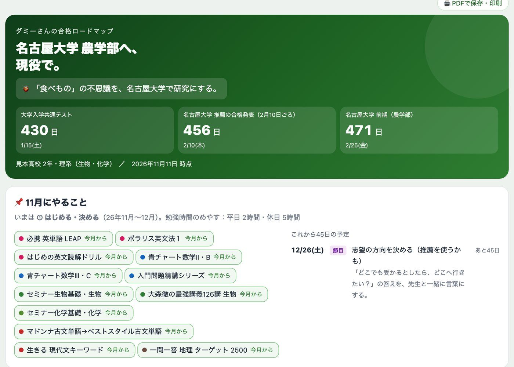
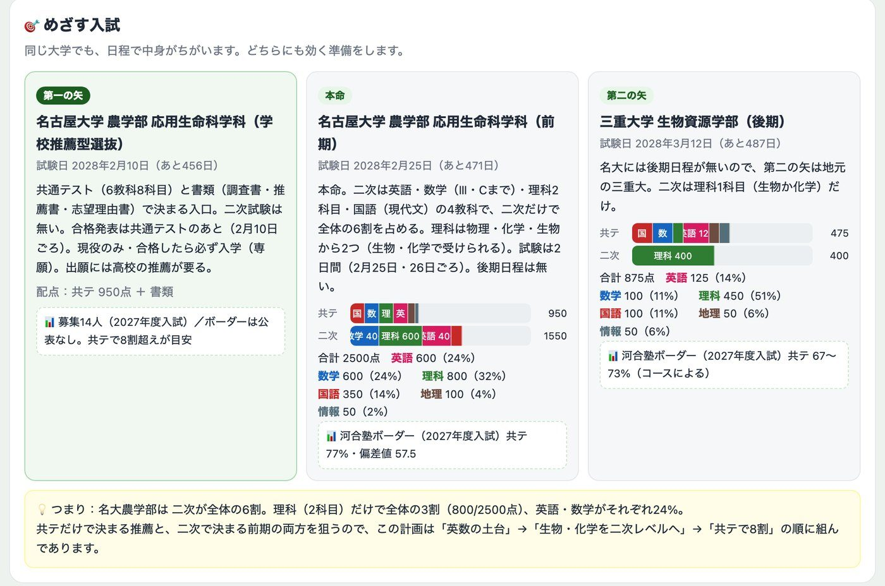
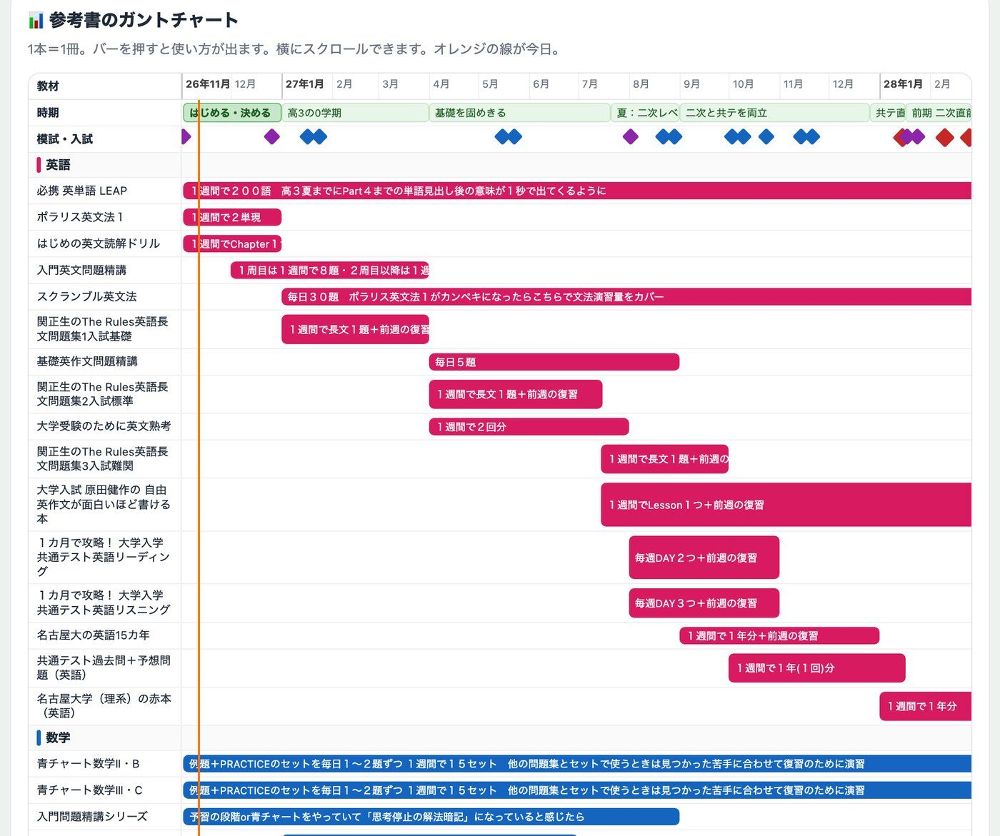
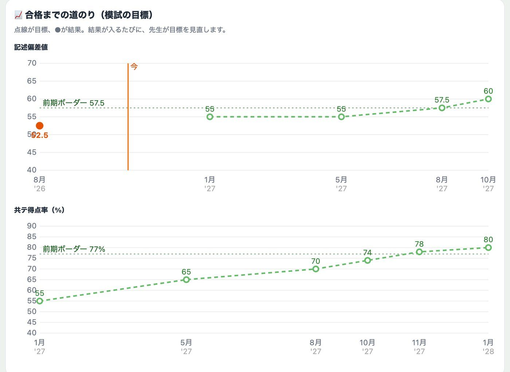
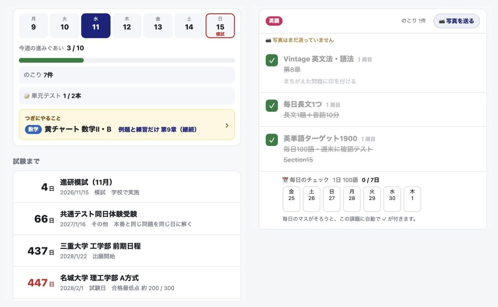
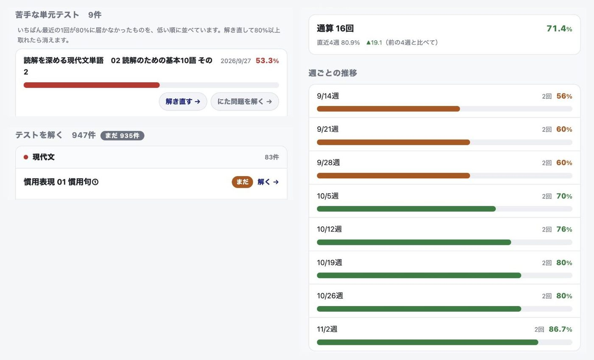

週1回の授業と、それ以外の6日間を
ぜんぶつなげます
大学受験の勉強時間のほとんどは、塾にいない時間です。だから、塾にいない6日間を「何を・どれだけ・やったか」まで見える形にしました。
毎朝7時
📱
「今日やること」と今週の進みぐあいがスマホに届く
毎日
✏️
課題を進め、チェック＋ノートの写真で提出。単元テストを解く
いつでも
💬
分からない問題はLINEで質問
授業の前
📋
1週間の記録が授業前レポートに自動でまとまる
週1回
📝
確認テスト120分（教室かオンライン）。解説と次の課題の調整
授業のあと
📄
解説つき答案PDF・授業報告書・次の週の課題が届く
塾長
このはまる塾長授業の時間に「先週なにをやったか」を聞くことはありません。授業の前に、先週の全記録を読み終えてから教室に入ります。だから週1回の時間を、いちばん必要なところに使えます。
入試の配点から、受験までの1年を
参考書1冊ずつ逆算します
入塾したら最初に作るのがこれです。志望校の入試方式・配点・ボーダーを調べ、使う参考書を「いつ始めて、週にどれだけ、何周するか」まで1枚の地図にします。下は見本（架空の生徒「ダミーさん」・名古屋大学 農学部志望の高2）。実際の生徒にも1人ずつ同じものを作っています。




塾長
このはまる塾長たとえば名大農学部の前期は、共通テスト950点・二次試験1550点。合計2500点のうち二次だけで6割、理科2科目だけで全体の約3割です。計画は気合いではなく、この数字から作ります。そして一度作って終わりではなく、模試の結果と進み方を見て毎月書き直します。
1年の計画が、自動で
「今週の課題」「今日やること」になる
英単語帳を「1週間で200語」で始めたなら、2週目は201〜400語。ロードマップを1週間ぶんに割り算して、毎週の課題とずれていないかを仕組みが見張ります。生徒はスマホで「今週」を開けば、やることと残りが全部分かります。

📊 のこり何件・1日何件
次の授業まであと何日、のこり何件、1日あたり何件やれば終わるかを出します。日割りで縛らないので、部活で1日ずれても画面が真っ赤になりません。
📷 チェック＋写真で提出
終わったらチェックを付け、ノートの写真を送ります。「チェックだけ付けて本当はやっていない」を、写真で見分けます。
📅 毎日の課題は日ごとのマス
「毎日100語」「週に10題」のような課題には、日ごとのマスと合計のマスが付き、毎日と週の両方の達成が見えます。
「やったつもり」を、毎週数字で確かめる
毎週の課題には、その範囲の単元テストが自動で付きます。スマホで解くとその場で採点され、記録が残ります。大事なのは「やったかどうか」ではなく「できるようになったかどうか」だからです。

- 900セット以上、すべて塾のオリジナル。英単語帳の範囲（語義・発音・空所補充）、英文法、古文単語、現代文キーワード、数学、地理（本物の統計データを使った資料問題）など。
- 正解が1つに決まるかを機械で確かめています。数学は計算プログラムで全問を検算、英語は発音辞書で照合。そのうえで塾長が点検します。
- 80%に届かなかった単元は「苦手な単元テスト」に残り続け、解き直して80%を超えると消えます。
- まちがえた問題は「つまずきカード」で1日5枚ずつ復習。3回続けて正解したら卒業。同じ問題をほかの塾生が何人まちがえたかも出ます。